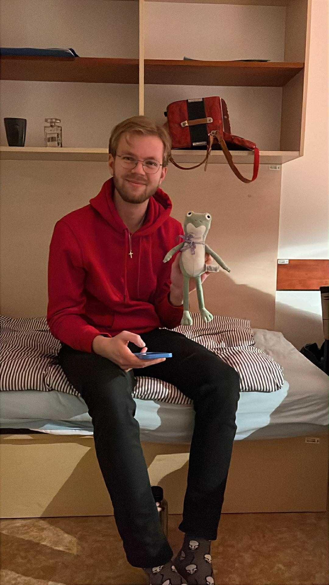
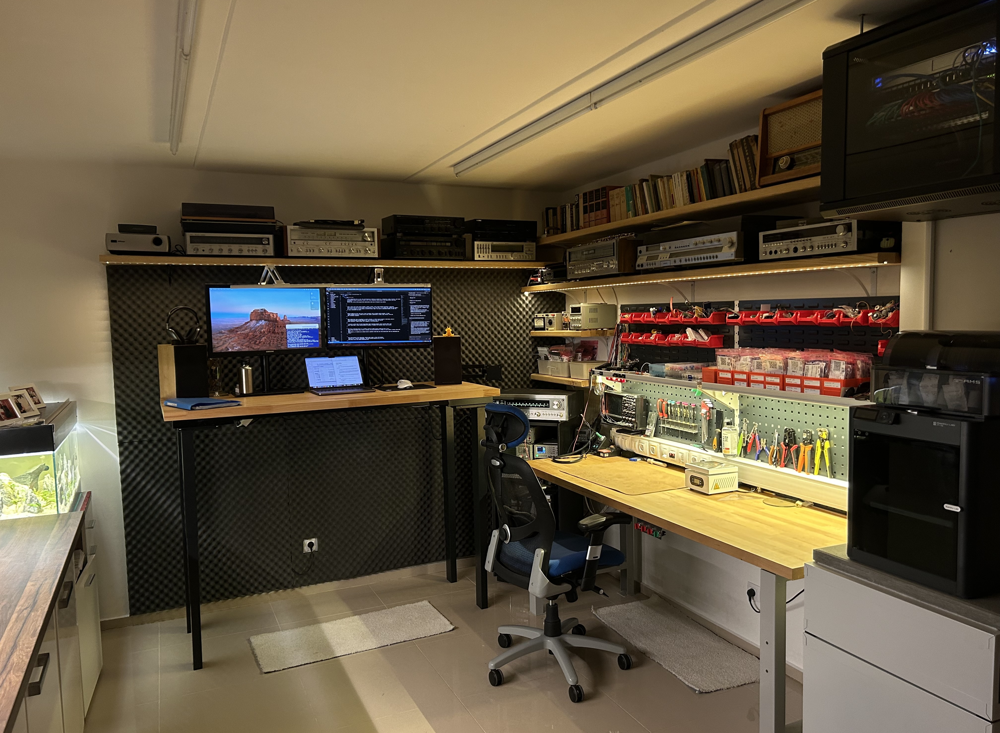

Pár slov o mně

Jmenuji se Marek Tatýrek, je mi 24 let a elektronikou a programováním se zabývam už od základní školy.
Studoval jsem Střední průmyslovou školu ve Zlíně, obor Elektrotechnika se zaměřením na automatizaci a zabezpečovací systémy. Pokračoval jsem studiem na bakalářského programu Automatizace a měření na VUT v Brně a momentálně studuji poslední ročník magisterského studia oboru Kybernetika. Zároveň jsem v prvním ročníku magisterského kombinovaného studia oboru Strategický rozvoj podniku.
I když mi během studia přišla většina předmětů a zaměření zajímavá, nejvíce jsem si oblíbil embedded programování a elektroniku. Vždy mě nejvíc bavilo když jsem mohl nabyté znalosti uplatnit v praxi, proto jsem si už od střední začal navrhovat první obvody a psát své první programy. V té době většinou na platformě Arduino. I když ne vše skončilo jednoznačným úspěchem, tak můžu říct, že jsem se jednoznačně něco naučil.
Důležitý okamžik pro mě byl, když jsem si koupil osciloskop, který mi hlouběji pomohl porozumět, v té době zejména analogové elektronice, protože jsem se začal zajímat o audiotechniku a zejména vintage receivery, které jsem začal servisovat a opravovat. Tou dobou jsem si začal zařizovat dílnu, což mi také zabralo nezanedbatelné množství času a můžete ji vidět na obrázku.

Během střední školy jsem si přivydělával na stavbě a uklízením, po střední jsem pak pracoval ve firmě Saturn, která se věnuje decentralizovaným čističkám odpadních vod a taky internetovým sítím. Také jsem měl možnost absolvovat 3 týdenní pracovní stáž v Budapešti ve firmě Power Quattro.
S nástupem na vysokou školu jsem svůj zájem směřoval opět k digitálním obvodům a objevil mikročipy ESP32, které oproti čipům Atmega v Arduinu nabízely mnohem více možností a já pomocí nich realizoval většinu svých projektů.
Mimo školu a elektroniku která je mi i koníčkem, rád hraju na hudební nástroje zejména pak klavír, hře na nějž se věnuji od základní školy. Užívám si také cestování — zajímá mě spíš autentická atmosféra málo známých míst než prohlídkové okruhy, ale ze všeho nejraději sdílím tyto chvíle s přáteli. Rád chodím pěšky nebo stopuji.
Dále trávím čas čtením, akvaristikou nebo mě baví i fyzická práce, ze sportů pak lyže, kolo, posilovna a judo.
Pokud vás něco zaujalo, neváhejte se ozvat.
Zpět na hlavní stránku